Tap Power
Stronger Pickaxe
Adds +1 gold to every tap.
Browser Clicker Game
Tap for gold, buy upgrades, and let miners work while you are away.
Tap Power
Adds +1 gold to every tap.
Automatic Income
Each miner earns 1 gold every second.
Worker Assignment
Resource Mining
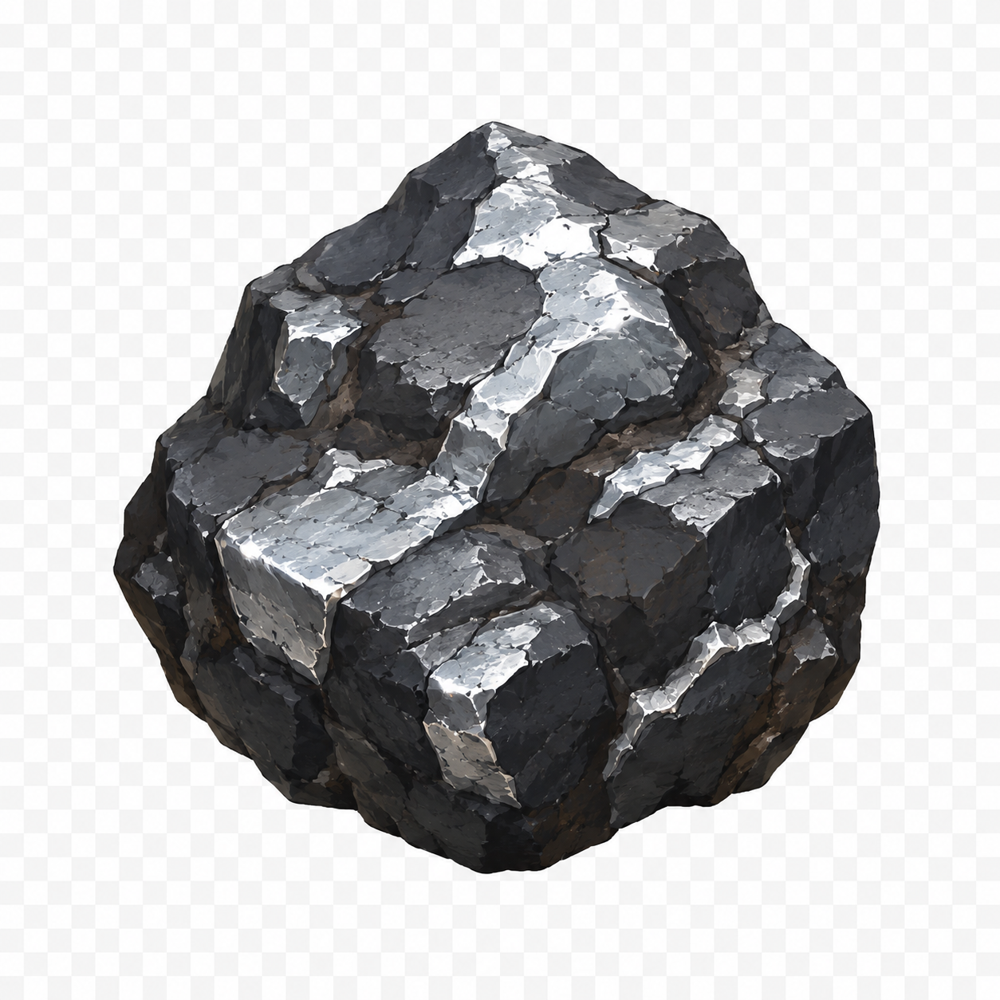
Mine iron ore for smelting and iron tool recipes. Requires owning a Wooden Pickaxe or better.
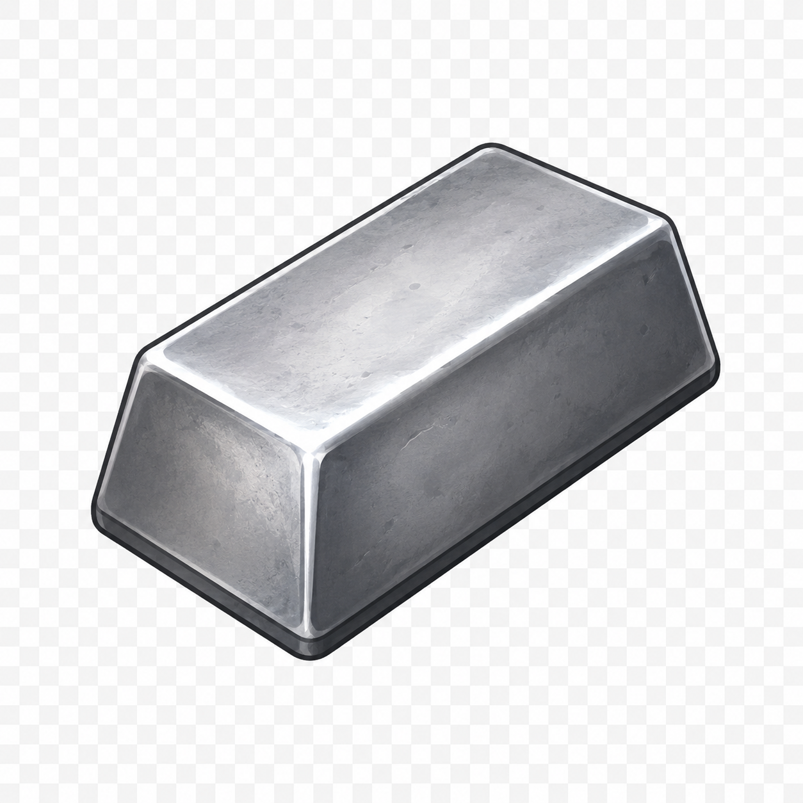
Iron Ingots0Progress
Gold Collector gives a one-time +50 gold payout, so it remains listed under Milestones rather than permanent rewards.
Field Work
Use a Wooden Hoe to plant wheat, wait for it to grow, and harvest crops. Equip an Iron Hoe for larger harvests.
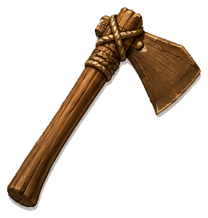
Craft a Wooden Hoe in the Crafting tab before planting.
Ready to plant.Field Notes
Gathering Grounds
Search the Forest for materials and clues, then push into the Rocky Trail for ore and coal.
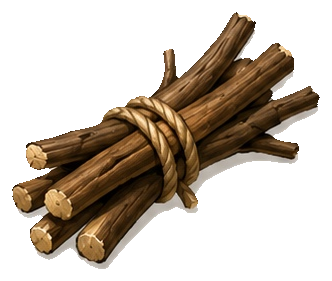
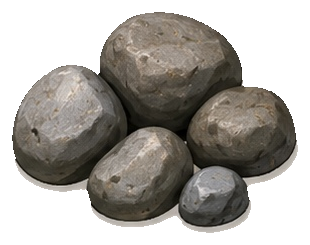
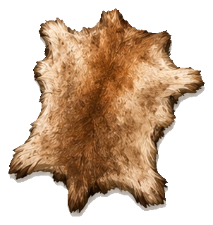
Selected Location
Choose an unlocked destination. One shared timestamp cooldown keeps expeditions refresh-safe.
Ready to explore.Expedition Upgrades
Trail Milestones
Recent Finds
Workshop
Turn gathered materials into tools and equipment.
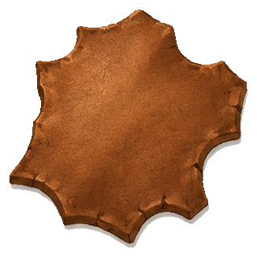
Leather0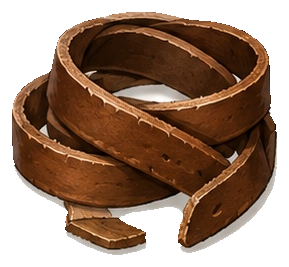
Bindings0Processing
Own a pickaxe and 5 stone pebbles to discover furnace plans.
Basic mining tool. Crafting unlocks it for equipment use.
Requires 4 sticks and 6 stone pebbles.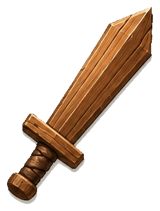
Starter weapon for the future Combat tab.
Requires 5 sticks and 2 stone pebbles.Starter farming tool for planting and harvesting wheat.
Requires 4 sticks, 3 stone pebbles, and 1 hide.Tan animal hide into crafting leather.
Requires 2 hide.Bind leather into tool-ready straps.
Requires 2 leather.Iron ingots now come from the Furnace queue instead of instant crafting.
Build Furnace Level 1 to smelt 3 iron ore + 1 coal.Improves iron mining to 2 ore per tap while equipped.
Requires 4 iron ingots, 2 sticks, and 1 leather binding.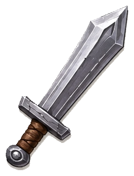
Prepared for future Combat systems.
Requires 3 iron ingots, 2 sticks, and 1 leather binding.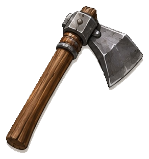
Harvest 5–9 wheat while equipped.
Requires 2 iron ingots, 3 sticks, and 1 leather binding.Coming Next
Fight enemies, earn equipment, and grow stronger.
Developer Tools
Controls are placeholders only. No debug setting is active yet.